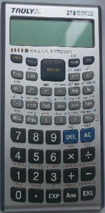
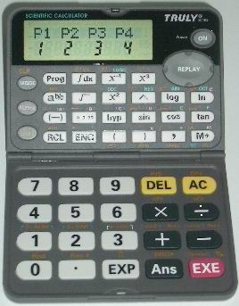

WebCal 計數機網頁
Truly SC-183用後報告及評價
編寫日期: 2009年7月17日
|  |  |
| SC-183 | SC-185 |
Truly SC-183計算機於2009年6月推出市場，它的計算功能差不多與CASIO fx-3650P完全相同，體積略為比fx-3650P細少一點。若與同系列的Truly SC-185比較，更換電池較為方便，外型亦與SC-185不同(SC-185可以摺合)，亦因為沒有摺合的持點，沒有SC-185計算機承托的支架容易損毀的問題，其它的特點與SC-185(2007年4月或之後版本)完全相同，所以SC-185的問題亦同時存在SC-183計算機中，這些問題包括:
1. 積分計算問題: 即是某些定積分計算問題，無故出現Math ERROR，有關問題的詳情請參看fx-3650P及SC185功能比較。
2. 說明書描述內容有錯: 小部份計算機功能與說明書描述有不同(有點兒似描述CASIO fx-3650P多過SC-185計算機 !?)，連說明書這重要資料都有錯！使人對Truly計算機的信心降低。有關問題的詳情請參看fx-3650P及SC185功能比較的統計功能、準確度、fx-3650P其它問題(II)、SC185問題(III)及(VII)。
3. 誤差修正問題: 計數機有一些設計，自動對誤差修正，但經過測試發現，SC185計算機缺少了對整數的修正功能，而這種基本的修正技術，在很多科學計算機都存在(甚至是較舊款的CASIO fx-50F或fx-3900PV亦有)，因此較容的出現計算上的問題，準確度亦會下降，有關問題的詳情請參看Truly SC185計算機的誤差問題。
4. 程式自動被修改問題: 即在某些特別條件下，當執行已輸入的程式，有很少部份原來的程式碼會自動被其它程碼取代，因而導致執行的程式出現Math ERROR或Syntax ERROR或出現錯誤答案，有關這個問題詳情請參看Truly SC183 / SC185程式自動修改問題。
Truly SC-183 或 Truly SC-185新版本是否值得購買，可以考慮的有以下幾方面:
1. 程式容量: SC183及SC185程式容量為360 bytes，容量雖然不算很少，但亦不算很多，因此若果有需要輸入的程式很長及複雜，有可能會出現程式容量不足夠的問題。(註: 現時另一部會考計算機fx-50FH程式容量有680 bytes)。
2. 計算機可靠性問題: SC183 及 SC185少了一些基本的誤差修正功能， 實在有點偷工減料的感覺，出現問題的機會率因而上升(Math ERROR及較大誤差等)，另外始終Truly 計算機較少香港學生使用，要完全找出及肯定有沒有其它問題，相信要一段頗長的時間才可以。若以可靠性的角度看，較CASIO fx-50FH及Sharp EL-506V為差。
3. 程式自動被修改問題: 已知有一些情況下會出現程式自動被修改問題，可能使程式無法正常執行(出現ERROR)，嚴重更可能出現錯誤答案，實在令人擔心會否還有其它類似問題的存在。
4. 計算機售價: 現時Truly SC185及SC183計算機的售價($98及$108)明顯比CASIO fx-3650P或fx-3950P平宜，不過Truly SC185/SC183計算機不是很多地方有售，大家可能要乘車專程到全港電子OA購買，花了車費及時間亦都是成本之一，以成本考慮，買Truly SC185/SC183亦未必一定平宜。
註: SC185計算機的售價比SC183更低，可能與SC185的承托支架容易損毀有關。
5. 計算機的普遍程度: 雖然現時很少人使用Truly SC-185計算機，但由於操作方法基本上可以說與CASIO fx-3650P或fx-3950P完全一樣，而現時fx-3650P亦有人使用，所以若果遇上計算上問題，應很容易尋找幫助，應不會有求助無援的情況出現。
6. 速度方面: 無論是SC185還是SC183計算機的速度平均比fx-3650P快，亦比CASIO 另一款較新計算機(fx-50FH)快，持別是一些代數指令的運算，速度可以相差很多(例如: M+)，若果針對這些特點編寫程式，特別對於一些複雜及要重複計算的程式幫助很大，有很明顯的分別及得益。
7. 舊D.A.L.設計: CASIO在2002年推出fx-3650P及fx-3950P計算機，其實是較舊D.A.L.計算機設計，存在一些缺點，例如: 計算先後順序層級較多及複雜，令使用者較易出現混淆及錯誤，較新款D.A.L.計算機已作出一些改善，例如: CASIO ES、ES PLUS系列及fx-50FH計算機等在一些函數中自動加入開括號，隱乘及乘號的計算層級相同等等，有助減少使用者出現錯誤的機會(持別是初用者)。2009年Truly公司才推出與fx-3650P功能及用法相同的計算機，實在令人有點過時產品的 感覺。
若各位網友對於新的Truly SC185 或 Truly SC-183計算機有何任疑問及意見，歡迎在WebCal論壇留言討論。